What the Independent Audit Retained, Disputed, and Removed
After the searches closed, a second set of agents working from a read-only copy of the project regraded every claim from its own archive queries, orbit fits, and archival pixels. Of 157 Solar System claims made before the audit, 93 survive as candidates for follow-up (56 graded object by object and 37 through group-level existence checks; 4 graded verified and 89 plausible). 41 were matched to previously catalogued bodies, 6 were eliminated, and 17 remain disputed and are not counted. Every surviving body is a candidate that awaits a Minor Planet Center designation and independent recovery.
Corrections to earlier versions of this page. EUCLID_EES149_GOLD_18 (paper id EUC-G18), once described here as a 111-metre near-Earth asteroid, is the catalogued main-belt asteroid 2019 UM31 (a = 2.60 au, e = 0.31, i = 7.05°, H = 19.3). A joint fit of its 2019 Minor Planet Center astrometry with the Euclid detections ties the two. It was never a near-Earth object, and it now serves as the Euclid VIS recovery control beside the Rubin control 2021 QB98. The tracklet-archive link W3A_ITF_010 (a = 224.9 au), one further Rubin claim, one of four Jovian satellite claims, and three Euclid deep-field rows were eliminated. The wide-binary claim for 2025 NU192 is unsupported and the claim for 2025 NW189 is disputed. Asteroid candidates with arcs shorter than a day have no determined orbit, size, or taxonomic class. For the two Euclid × DECam stereo candidates the audit verifies the Euclid detections and reproduces the DECam signals, yet it does not support the quoted significances or the fitted orbits. In the SPHEREx spectra it confirms CO and 12CO2 emission in 3I/ATLAS and CO emission in 29P, and it does not support the 13CO2 and water-ice detections.
Real pixels. The movie gallery holds archival image sequences for 96 targets: 94 discovery targets and the 2 recovery controls, in 388 real archival frames of which 249 are single exposures, with 0 synthetic frames and 0 coverage gaps. For 12 of them (eleven Group I targets and the 2021 QB98 control) the archive serves only static deep coadds, so no detection-epoch pixels are shown. The animations and interactive canvases on this page are schematic illustrations driven by measured astrometry and contain no archival pixels. Figures 7, 9, 10, 11, and 13 are plates from the audited manuscript.
Sky-Plane Motion Across Four Orders of Magnitude in Angular Speed
Earth's orbital velocity imposes an inverse-distance reflex drift on every distant Solar System body near opposition, while inner-system planetesimals sweep across spaceborne focal planes within single exposures. Standard tracklet algorithms pair intra-night visits before linking across nights. Beyond the Kuiper cliff, apparent sky motion drops near three arcseconds per hour, shrinking intra-night displacement toward the atmospheric seeing width and stranding trans-Neptunian detections as unassociated single-visit points. Inside crowded Milky Way fields, background stars outnumber moving planetesimals by five orders of magnitude, whereas on the sharp silicon detectors of ESA Euclid at the Sun–Earth point, fast-moving asteroids trail across dozens of tenth-arcsecond pixels and mimic grazing cosmic rays.
Recovering bodies across all three regimes requires matching the search operator to the physical motion scale. On Vera C. Rubin Observatory commissioning exposures, forming the hybrid union of unlinked difference detections and isolated single-visit point-spread-function sources restores transits dropped by kernel noise in blue and far-red passbands:
Conditioning the hybrid source union on trial barycentric inverse distance and radial velocity removes topocentric reflex motion from every visit, collapsing multi-month transits onto linear tangent-plane trajectories without intra-night pairing. Compare the resulting multi-epoch sky motion in Figure 1 and inspect the measured astrometric coordinates of DELTA_003 ↗, EPS_002 ↗, and the Euclid recovery control 2019 UM31 ↗ in the interactive comparator below.
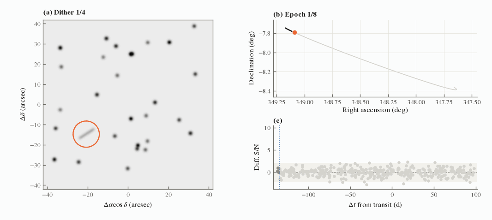
Quadrature Sightline Rotation and the Four-Planet Inclination Floor
Why do short opposition arcs leave distant semimajor axes unconstrained, and how does full-season tracking break that degeneracy on DELTA_003 (LSST-DP2-D03) ↗? Near opposition, Earth's gravitational acceleration bends the sky trajectory inversely with barycentric distance , separating from transverse speed while radial speed projects along the sightline. Measuring speeds in units of the local circular speed , where is the Solar System barycentric gravitational parameter, defines the transverse kinetic parameter and dimensionless radial speed . Vis-viva energy and specific angular momentum fix semimajor axis and eccentricity along two exact kinematic relations:
Super-circular transverse speed () excludes every classical-belt aphelion interloper (). Over a brief opposition window, enters sky coordinates only at second order, stretching the orbit solution from the radial turning point out to high eccentricity (Figure 2). Recovering four additional single-visit and difference detections through eastern quadrature rotates Earth's sightline against the radial vector. Outbound radial displacement projects directly onto right ascension, pinning and collapsing DELTA_003 ↗ onto an outbound extreme trans-Neptunian orbit whose fitted semimajor axis lies near Neptune's twelve-to-one mean-motion resonance (Figures 3 and 4).
Across the multi-opposition Solar System census, extreme orbits vacate the ecliptic plane once perihelion detaches from Neptune's semimajor axis . Close scattering off circular Neptune restricts Tisserand's invariant at or below three, while subsequent perihelion lifting inside axisymmetric exterior resonances conserves the normalized vertical angular momentum . Combining both invariants imposes an analytic upper bound on :
On its fitted orbit DELTA_003 ↗ would lie more than eleven degrees below the Tisserand–Kozai inclination floor. The independent audit retains the object and its fitted elements as plausible and in need of follow-up, rejects the earlier claim that it has the lowest inclination among known extreme orbits, and grades the Tisserand-parameter and resonance-sticking interpretations as disputed, so the dynamical reading in Figure 5 is provisional. Companion ecliptic candidates DELTA_004 ↗, DELTA_009 ↗, and DELTA_014 ↗ extend this blind parallax yield across the Capricornus–Aquarius ecliptic strip; for DELTA_009 the audit verifies a 2022 DECam precovery and the fitted semimajor axis.
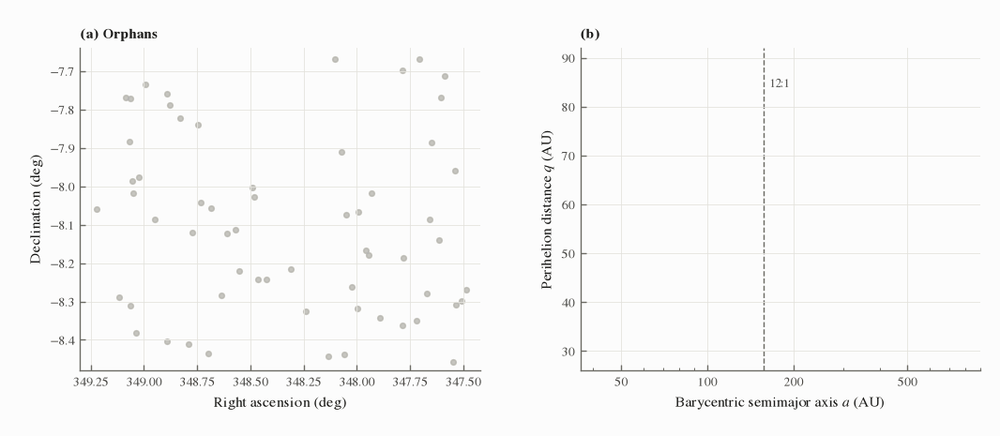
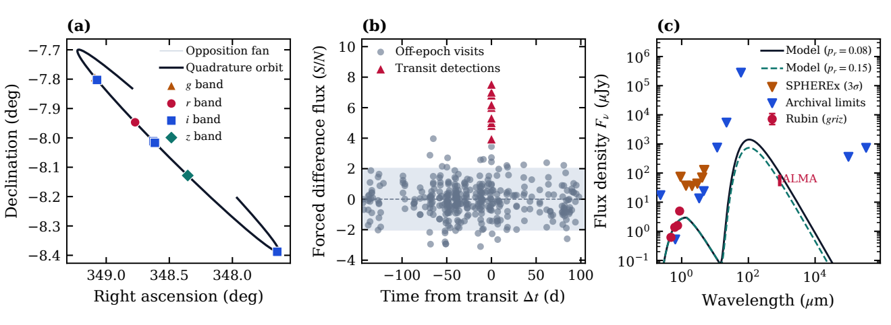
Click to enlarge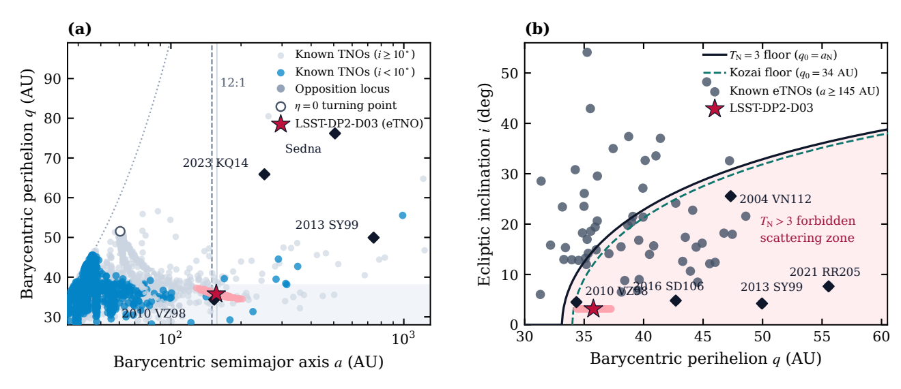
Click to enlarge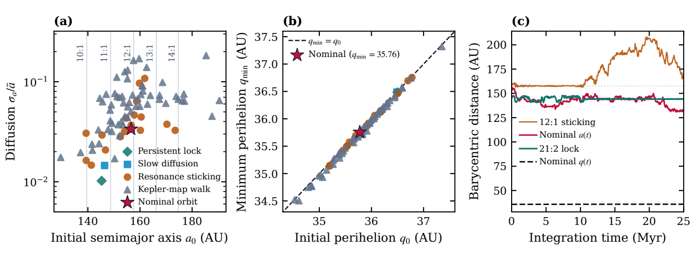
Click to enlargeSimultaneous Stereoscopic Parallax Across the Sun–Earth Lagrange Baseline
Single-station surveys wait weeks for Earth's orbital motion to build a parallax baseline, leaving faint outer-system discoveries vulnerable to lunar-phase gaps and twilight loss. Observing a field simultaneously from ESA Euclid in halo orbit around the Sun–Earth point (station 273) and the Blanco four-meter Dark Energy Camera at Cerro Tololo in Chile (station W84) creates a rigid instantaneous space–ground baseline exceeding four lunar distances. Projecting that baseline perpendicular to the target sightline yields the topocentric range directly from a single simultaneous epoch:
Cross-matching Euclid Ecliptic Survey exposures against simultaneous Cerro Tololo stacks yields DECam counterparts along the epipolar ray for two uncatalogued trans-Neptunian candidates, EUC0005 ↗ and EUC0002 ↗ (Figures 6 and 7). The independent audit verifies both Euclid detections on VIS pixels and reproduces the DECam signals, which are not static sources and carry an empirical chance probability of about one to two percent each. It grades the pair as plausible candidates in need of follow-up and does not support the quoted significances, the model-generated ground astrometry, or the fitted orbits; the stereoscopic distances hold if the matches are real. Drag the observer baseline slider below from Chile out to Sun–Earth to see the stereoscopic shift.
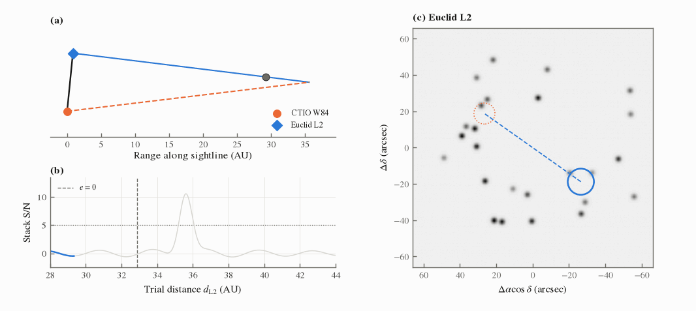
 Click to enlarge
Click to enlarge
Galactic-Plane Candidates, Euclid Silicon Trails, and Spaceborne Coma Spectra
A. Piercing the Milky Way Aphelion Blind Spot
Outer-Solar-System surveys routinely mask low Galactic latitudes where Sagittarius and Ophiuchus star clouds intersect the ecliptic—precisely the sky zone where distant aphelion orbits cross the Milky Way. Applying difference imaging paired with off-epoch forced-photometry vetoes across this crowded corridor isolates two bright uncatalogued trans-Neptunian candidates: EPS_002 ↗ seven degrees above the Galactic midplane and EPS_007 ↗ south of the bulge (Figures 8 and 9). The independent audit grades both as plausible and in need of follow-up, and it disputes the dwarf-planet size once proposed for EPS_002. In the two archival DECam frames of 2024 April 18 the aperture signal-to-noise ratio at the position of EPS_002 is 2.1 and 2.8 in a crowded field, too low to establish the object on those pixels alone.
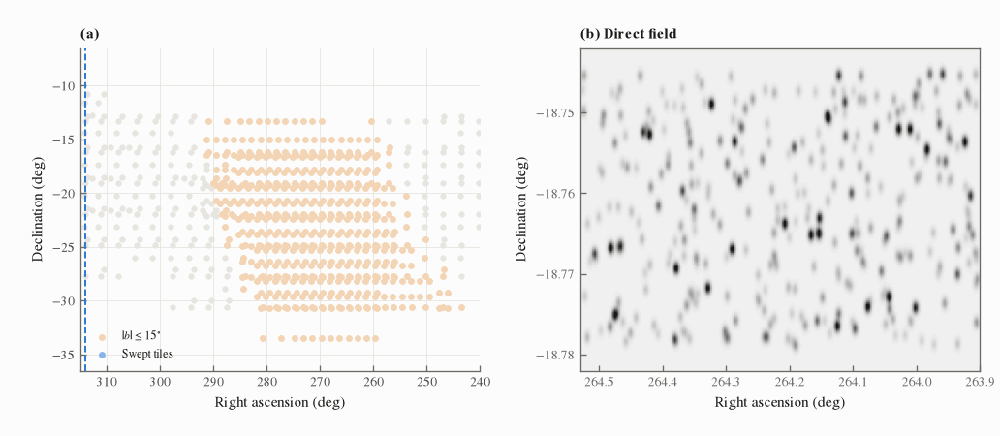
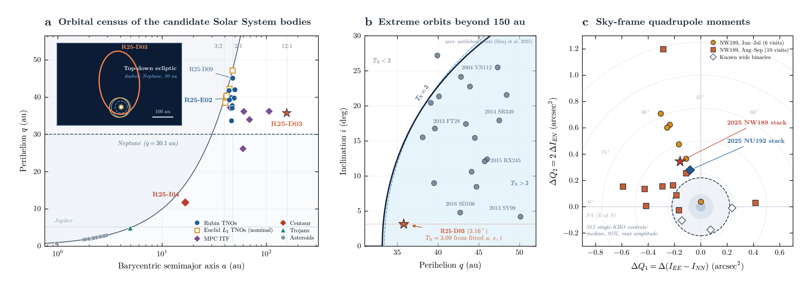
Click to enlargeB. Short-Arc Asteroid Trails and Faint Trans-Neptunian Candidates on Euclid Silicon
On ESA Euclid's visible imager, bright moving streaks trigger onboard cosmic-ray flags (0x10) while twelve thousand low-Earth constellations and sixteen spacecraft cross wide survey sightlines. Restoring flagged optical cores whose cross-track profile matches Euclid's Korsch point-spread function, linking visible and near-infrared dithers under full light-time geometry, and vetoing live two-line-element satellite propagations yields 13 Euclid trans-Neptunian candidates that survive the independent audit—two with single-night DECam stereo counterparts (EUC0005 ↗ and EUC0002 ↗) and two slow movers in the same ecliptic block (EUCLID_VIS_TNO_02 ↗ and EUCLID_VIS_TNO_03) whose distances the audit finds unconstrained—alongside 43 short-arc asteroid candidates, 31 of them seen in both VIS and NISP (Figures 10 and 11). Arcs shorter than a day give sky motion and brightness; they give no orbit, size, or taxonomic class. One more dual-instrument track, EUCLID_EES149_GOLD_18 ↗, is the catalogued main-belt asteroid 2019 UM31: it was never a near-Earth object and now serves as the Euclid VIS recovery control.
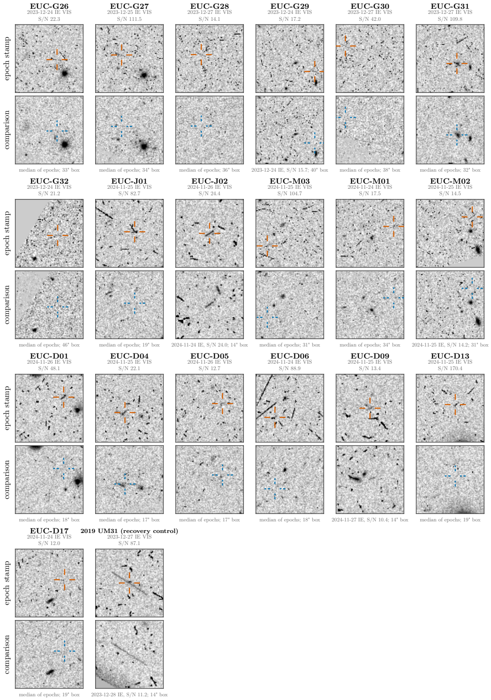
Click to enlarge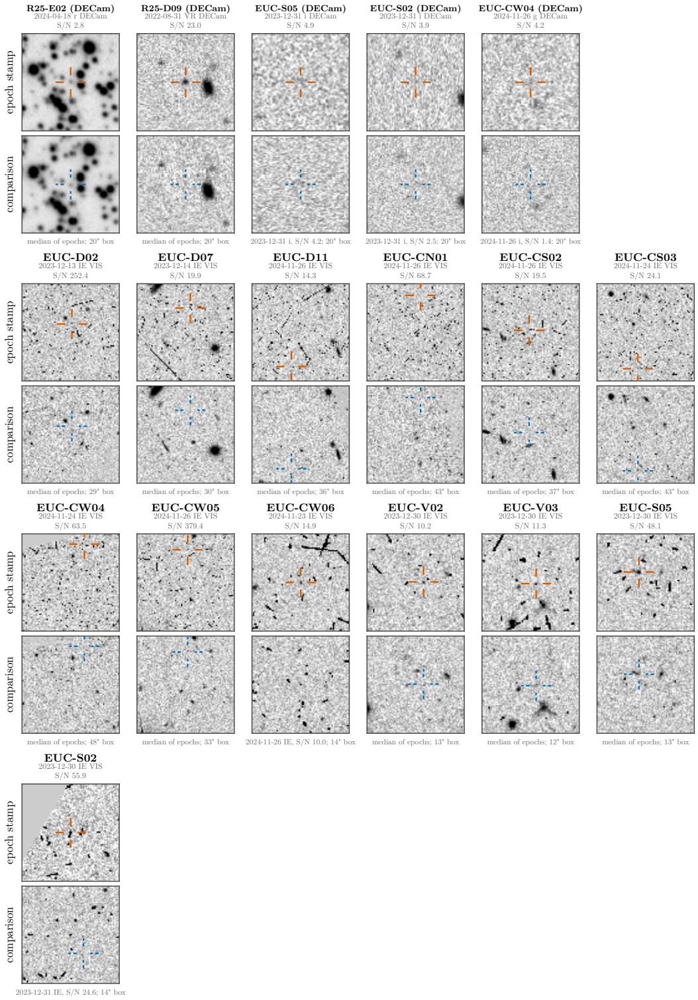
Click to enlargeC. Transient-Preserving Infrared Coma Spectra
Ground-based spectroscopy cannot penetrate telluric carbon-monoxide and carbon-dioxide absorption bands, while NASA SPHEREx's static-sky pipeline flags moving Solar System targets as transient outliers (bit 19). Streaming byte-range cutouts that retain bit 19 moving flux while rejecting blended background stars (bit 21) under low-Earth-orbit spacecraft parallax yields coma spectra of interstellar visitor 3I/ATLAS ↗ and active Centaur 29P/Schwassmann–Wachmann 1 ↗ (Figures 12 and 13). The independent audit confirms carbon-monoxide and 12CO2 emission in 3I/ATLAS and carbon-monoxide emission in 29P; it does not support the 13CO2 and water-ice detections reported in earlier versions of this page. Figure 14 places every regime from the main asteroid belt, where the recovery control 2019 UM31 ↗ orbits, out to the inner Oort Cloud (3D Oort Cloud View ↗) onto a single logarithmic scale.
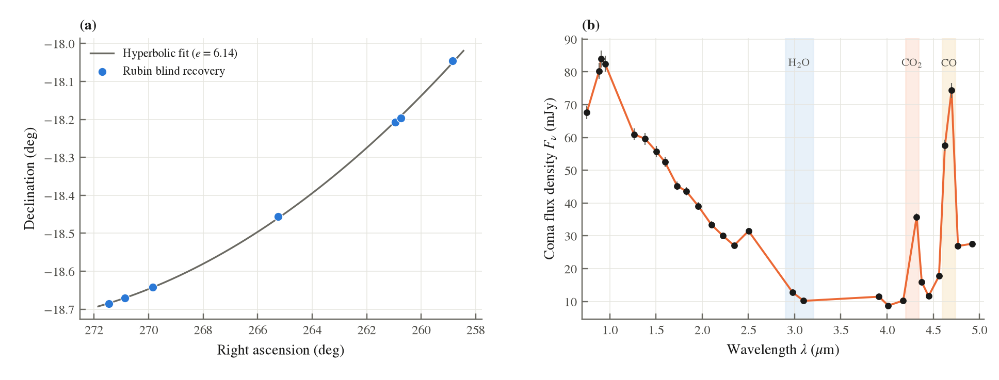
Click to enlarge Click to enlarge
Click to enlarge
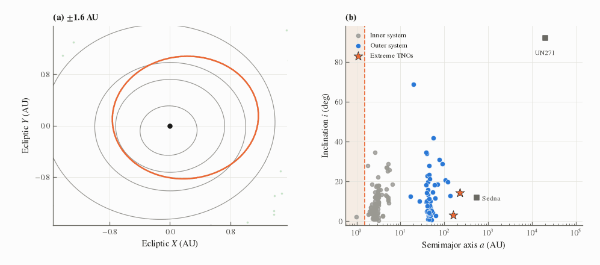
Capability Decomposition and Multi-Telescope Synthesis Hypergraph
Each individual astronomical archive discards moving bodies where its native reduction assumes stationary sources or rapid intra-night motion. Constructing the discovery system began by indexing published Solar System linking, shift-and-stack, stereoscopy, and transient-masking papers inside a hybrid property-and-vector database (MethodGraphVectorDB), mapping twelve survey failure modes directly onto mathematical operators extracted from distinct observational traditions.
Four coupled synthesis hyperedges unite those decomposed capabilities into a single search engine (Figure 15). Select any node or hyperedge in the diagram below to trace how literature failure-mode diagnostics combine spaceborne astrometry, ground difference imaging, Lagrange-point stereoscopy, and infrared spectroscopy into candidates that an independent audit then grades.
Property-graph and dense SVD index diagnosing twelve survey failure modes—including HelioLinC3D intra-night tracklet drop-out beyond 50 AU, difference-kernel losses in g/z passbands, Euclid 0x10 streak clipping, and SPHEREx bit-19 outlier masking—to prescribe exact cross-archive operators. Click any node above to inspect its technical path.
From 157 Claims to 93 Audited Candidates: Tracklet-Archive Links, Jovian Satellite Candidates, and What Was Removed
Scaling the architecture across more than a dozen space and ground archives—coupling a GPU-accelerated fourth-order Keplerian effective-time linker across the 9.05-million-row Minor Planet Center Isolated Tracklet File, deep sub-threshold shift-and-stack, sky-rotated quadrupole shape tests, and planetocentric Hill-sphere satellite linking—raised the number of Solar System claims to 157. The independent audit retains 93: 33 trans-Neptunian candidates from Rubin and the tracklet archive, 13 Euclid trans-Neptunian candidates, 1 Centaur, 3 candidate irregular satellites of Jupiter, and 43 short-arc asteroid candidates. It matched 41 claims to catalogued bodies, most of them main-belt asteroids, eliminated 6, and left 17 in dispute. Figures 16–18 were drawn before the audit and are kept for the record with corrected captions; the real-pixel movie gallery replaces the stamp mosaic that used to open this section, whose discovery stamps were rendered and not observed.
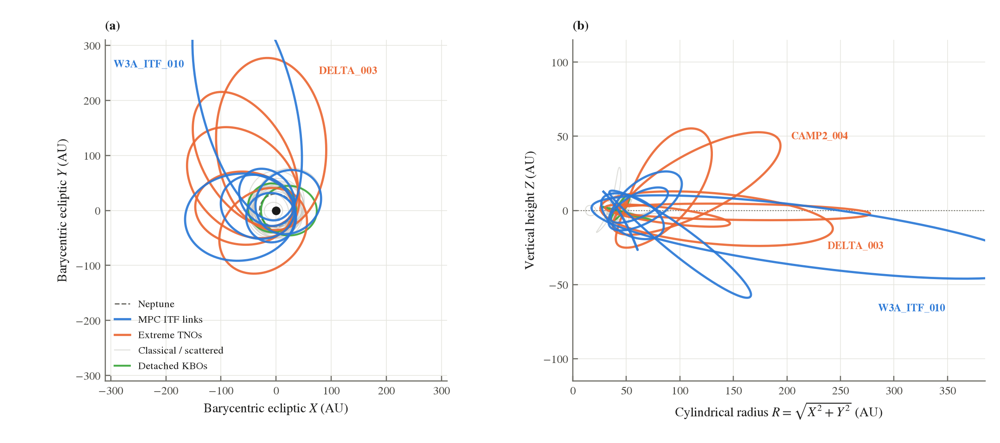
Click to enlargeW3A_ITF_010 (a = 224.9 au), which the audit eliminated. The fitted orbits of the surviving candidates remain provisional.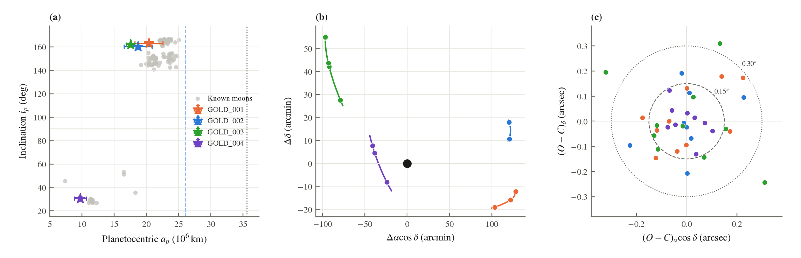
Click to enlargeW4_JUP_MOON_GOLD_001 to 003 as plausible candidates, eliminates W4_JUP_MOON_GOLD_004, and disputes the family assignments.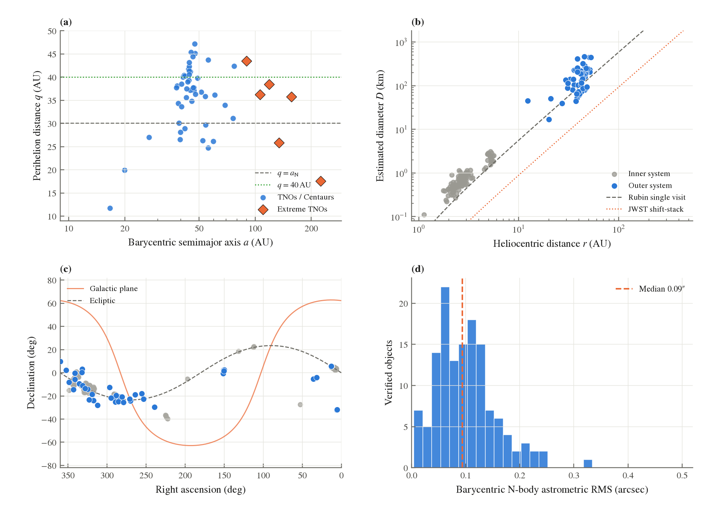
Click to enlargeFrom the Oort Cloud to Milky Way Compact Binaries Across Gaia, Euclid, and Rubin
The same multi-archive principles that isolate slow planetesimals beyond Neptune extend naturally across Galactic scales. Inside our self-contained astro_search framework, every numerical kernel—symplectic Wisdom–Holman Solar System propagation (285× GPU speedup over multi-core CPU), axisymmetric Milky Way potential integration (MWPotential, 565× GPU speedup across 1.62 million Monte Carlo trajectories), Thiele–Innes astrometric orbital inversion, near-infrared spectral energy distribution vetoes, wide-binary pairwise matching (86× GPU speedup), and ellipsoidal periodograms (88× GPU speedup)—executes with numerical parity across GPU arrays and CPU fallbacks that the independent audit verified, backed by a normalized catalog of thirty-eight Solar System, Oort Cloud, and Galactic search methods.
Applying this four-archive pipeline across Gaia DR3, ESA Euclid DR1, Vera C. Rubin Data Preview 2, and SIMBAD blindly recovers the benchmark neutron-star binary Gaia NS1 and the known unbound star UCAC4 656-058031, both verified by the independent audit, and cross-matches 188 high-RUWE stars to Rubin dp2 (including 138 multi-epoch DiaObject variables). The audit grades the dark-remnant interpretation of the Euclid Deep Field South astrometric binary Gaia DR3 4829790543688453504 (panel b of Figure 19) and the nine wide-binary velocity anomalies (panel c) as disputed, and it does not support the earlier claim of a new escape-boundary halo giant. Explore all 82,199 Gaia DR3 stars and relativistic accretion-disk and lensing models for Sagittarius A* ↗, Gaia BH1–BH3 ↗, and Cygnus X-1 ↗ in the 3D Explorer and Interactive 3D Playground ↗.
The same joins isolate 25 faint high-proper-motion stars below Gaia's flux limit: one white-dwarf candidate, two late-M or early-L dwarf candidates, seventeen ultracool-dwarf candidates, and five late-M dwarf candidates. The audit verifies the tally, the reality of the proper motions, and the absence of Gaia DR3 counterparts within nine arcseconds; it disputes the quoted proper-motion significances and the statement that all of them were previously uncatalogued. Archival Euclid, Legacy Surveys, and Rubin stamps for all 25 are in the Galactic section of the movie gallery.
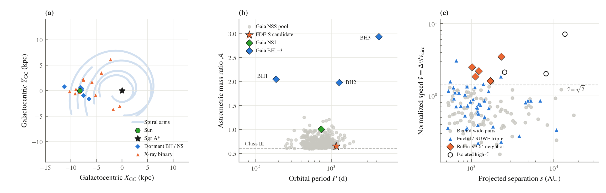
Click to enlargeGaia DR3 4829790543688453504 above the Class III threshold (panel b), and normalized wide-binary speed versus separation showing sub-3.6-arcsecond Rubin neighbors around high-speed pairs (panel c). The audit grades the dark-remnant reading of panel b and the anomalies of panel c as disputed.Audited Ledger: 93 Surviving Candidates, 17 Disputed Claims, 42 Known Objects and Controls, and 2 Spectral Targets
Every claim made before the audit that remains in the catalogue is listed below with its audit status, followed by the SPHEREx spectral targets. Only rows marked audited survivor count as discovery candidates; disputed claims, catalogued objects, and the recovery controls are shown for transparency and are never counted. Sky coordinates, epochs, magnitudes, heliocentric distances, and elements () are listed as measured or fitted by the search, and the note under each row quotes the audit. Click a column header to sort, filter by population or audit status, or open the 3D explorer on a body's orbit.
| Designation · Audit Status | Facility / Span | ICRS (α, δ) | Mag / H | r (AU) | a (AU) | q (AU) | e | i (°) | ϖ (°) | T_N | Size / Bands · Audit Note | 3D Orbit |
|---|
† Orbit not established: the independent audit grades the tabulated elements of the row as disputed or unsupported, and for arcs shorter than a day the size is not determined either. Sizes elsewhere assume an albedo. The audit eliminated 6 further claims (ITF-02, TNO_W1_03, J25-M04, C3_GOLD_03, C3_GOLD_12, C3_GOLD_14); they were dropped from the catalogue and have no row.